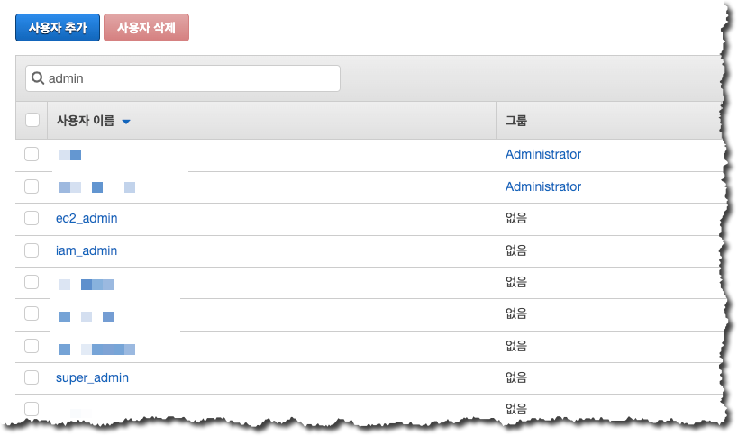

IAM 사용자 권한의 확인
여기까지 진행을 하면서 우리는 IAM 리소스 중 IAM 사용자(my_admin, my_ec2admin) 을 생성하였고 하나의 고객 관리형 정책과 하나의 역할을 생성하였습니다. 이제 우리가 생성한 IAM 구성 요소들이 어떻게 동작하고 사용자에게 권한 할당이 어떻게 이뤄지는지 확인하도록 하겠습니다.
- 먼저, admin 사용자의 권한을 확인하기 위하여 AWS Management Console 에 admin 사용자 계정 정보를 이용하여 접속합니다.
- “my_admin” IAM 사용자에게 IAM 관련 권한이 있는지 확인하기 위하여 아래와 같이 Management Console 에서 IAM 메뉴로 이동합니다.

- IAM 메뉴의 대시보드 옵션 중 “사용자” 를 클릭하여 설정되어 있는 IAM 사용자가 나타나는 것을 확인합니다.
- IAM 권한이 없는 경우 “사용자” 리스트를 확인할 수 없습니다. 
- 이번에는 “my_admin” 사용자에게 EC2 관련 권한이 있는지 확인하기 위하여 아래와 같이 Management Console 에서 “EC2” 메뉴로 이동합니다. 사용중인 IAM 사용자에게 EC2 관련 권한이 정상적으로 할당되었다면 아래와 같이 EC2 대시보드의 화면이 나타나게 됩니다.
my_ec2admin 사용자의 권한 확인
- 다른 IAM 사용자의 권한을 확인하기 위하여 Management Console 에서 Logout 한 후, 이번에는my_ec2admin 사용자의 권한을 확인하기 위하여 AWS Management Console 에 admin 사용자 계정 정보를 이용하여 접속합니다.

- “my_ec2admin” IAM 사용자에게 IAM 관련 권한이 있는지 확인하기 위하여 아래와 같이 Management Console 에서 IAM 메뉴로 이동합니다.
“my_ec2admin” 에는 IAM 관련 권한이 없기 때문에 아래와 같이 IAM 대시보드에 권한 없음과 관련한 메시지가 나타나게 됩니다.
- 이번에는 “my_ec2admin” 사용자에게 EC2 관련 권한이 있는지 확인하기 위하여 아래와 같이 Management Console 에서 “EC2” 메뉴로 이동합니다.
“my_ec2admin” 에는 EC2 관련 권한이 할당되어 있으므로 아래와 같이 EC2 대시보드 메뉴가 정상적으로 출력되는 것을 확인할 수 있습니다.